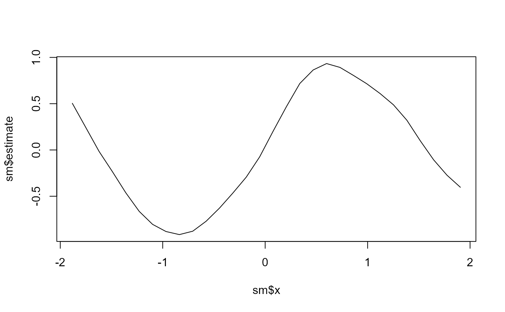

The grid-marginalized posterior mean of each s(x) term's latent values,
one estimate per node (bin midpoint or unique covariate value). The latent
block values are read from the fit's per-grid modes, weighted by the
hyperparameter grid weights.
Usage
smooth_effects(object, term = 1L)
Arguments
- object
A tulpa_fit from tulpa() with s(...) term(s) in the
formula.
- term
Which smoother: index or covariate name. Default 1.
Value
A data frame with columns x (node location) and estimate (the
posterior-mean smooth at that node), with the covariate name as an
attribute "var".
Examples
# \donttest{
set.seed(1)
d <- data.frame(x = runif(300, -2, 2))
d$y <- rpois(300, exp(0.3 + sin(2 * d$x)))
fit <- tulpa(y ~ s(x), data = d, family = "poisson")
sm <- smooth_effects(fit)
plot(sm$x, sm$estimate, type = "l")

# }